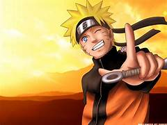

naruto
Naruto[a] is a Japanese manga series written and illustrated by Masashi Kishimoto. It tells the story of Naruto
Uzumaki,
a young ninja who seeks recognition from his peers and dreams of becoming the Hokage, the leader of his village.
The
story is told in two parts: the first is set in Naruto's pre-teen years (volumes 1–27), and the second in his
teens
(volumes 28–72). The series is based on two one-shot manga by Kishimoto: Karakuri (1995), which earned Kishimoto
an
honorable mention in Shueisha's monthly Hop Step Award the following year, and Naruto (1997).
Naruto was serialized in Shueisha's shōnen manga magazine Weekly Shōnen Jump from September 1999 to November
2014, with
its chapters collected in 72 tankōbon volumes. Viz Media licensed the manga for North American production and
serialized
Naruto in their digital Weekly Shonen Jump magazine. Part I of the manga was adapted into an anime television
series by
Pierrot and Aniplex, which ran for 220 episodes from October 2002 to February 2007 on TV Tokyo. A second series,
which
adapts material from Part II of the manga, is titled Naruto: Shippuden and ran on TV Tokyo for 500 episodes from
February 2007 to March 2017. Pierrot also developed 11 animated films and 12 original video animations (OVAs).
The
franchise includes light novels, video games, and trading cards developed by several companies. The story of
Naruto
continues in Boruto, where Naruto's son Boruto Uzumaki creates his own ninja way instead of following his
father's.

naruto
aruto is one of the best-selling manga series of all time, having 250 million copies in circulation worldwide in
47
countries and regions, with 153 million copies in Japan alone and remaining 97 million copies elsewhere. It has
become
one of Viz Media's best-selling manga series; their English translations of the volumes have appeared on USA
Today and
The New York Times bestseller list several times, and the seventh volume won a Quill Award in 2006. Reviewers
praised
the manga's character development, storylines, and action sequences, though some felt the latter slowed the
story down.
Critics noted that the manga, which has a coming-of-age theme, makes use of cultural references from Japanese
mythology
and Confucianism
.jpeg)
.jpeg)
Boruto
Boruto[a] is a Japanese manga series written by Ukyō Kodachi and Masashi Kishimoto, and illustrated by Mikio
Ikemoto. It
is a spin-off and a sequel to Kishimoto's Naruto and follows the exploits of Naruto Uzumaki's son Boruto Uzumaki
and his
ninja team. The manga began serialization under the title Boruto: Naruto Next Generations,[b] with Kodachi as
writer and
Kishimoto as editorial supervisor in Shueisha's shōnen manga magazine Weekly Shōnen Jump in May 2016, and was
transferred to Shueisha's monthly magazine V Jump in July 2019. In November 2020, Kodachi stepped down, with
Kishimoto
taking over as writer. In April 2023, the series concluded the first part of the story, and, following a brief
hiatus,
continued in August of the same year with a second part titled Boruto: Two Blue Vortex.[c]
.jpeg)
Boruto originated from Shueisha's proposal to Kishimoto on making a sequel to Naruto. However, Kishimoto rejected
this
offer and proposed his former assistant Mikio Ikemoto to draw it; the writer of the film Boruto: Naruto the
Movie, Ukyō
Kodachi, created the plot. A 293-episode anime television series adaptation, produced by Pierrot with Kodachi's
story
supervision (episodes 1–216), was broadcast on TV Tokyo from April 2017 to March 2023; a second part has been
announced
to be in development. Unlike the manga, which began as a retelling of the Boruto film, the anime begins as a
prequel set
before Boruto and his friends become ninjas in a later story arc. A series of light novels have also been
written
Boruto
Boruto originated from Shueisha's proposal to Kishimoto on making a sequel to Naruto. However, Kishimoto rejected
this
offer and proposed his former assistant Mikio Ikemoto to draw it; the writer of the film Boruto: Naruto the
Movie, Ukyō
Kodachi, created the plot. A 293-episode anime television series adaptation, produced by Pierrot with Kodachi's
story
supervision (episodes 1–216), was broadcast on TV Tokyo from April 2017 to March 2023; a second part has been
announced
to be in development. Unlike the manga, which began as a retelling of the Boruto film, the anime begins as a
prequel set
before Boruto and his friends become ninjas in a later story arc. A series of light novels have also been
written
.jpeg)